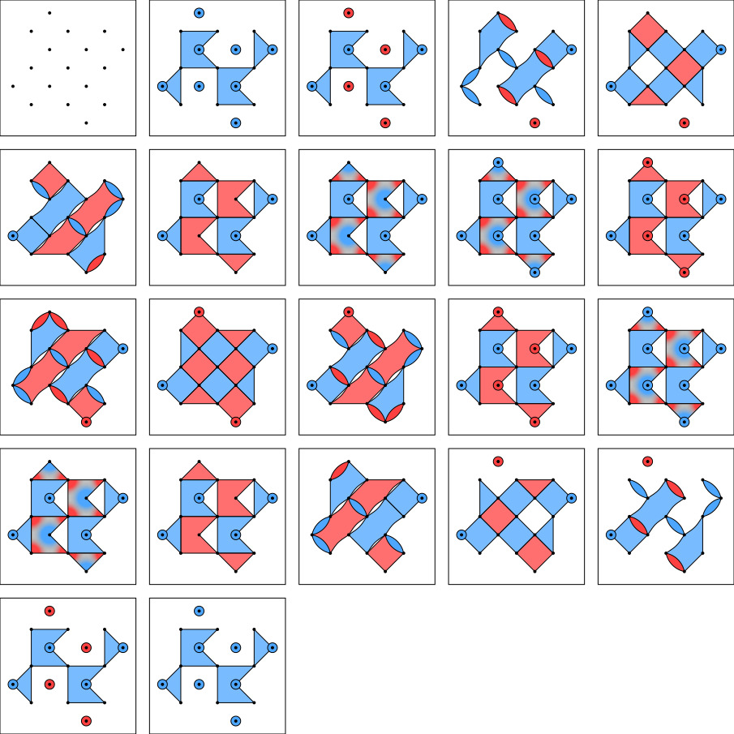
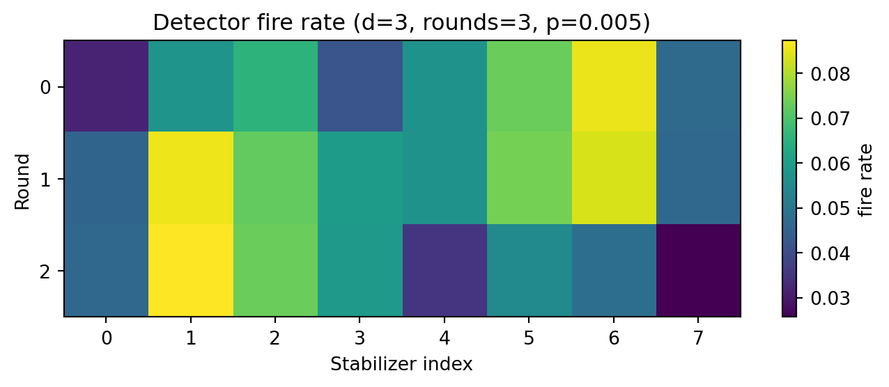
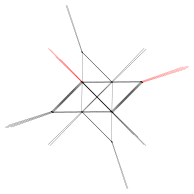
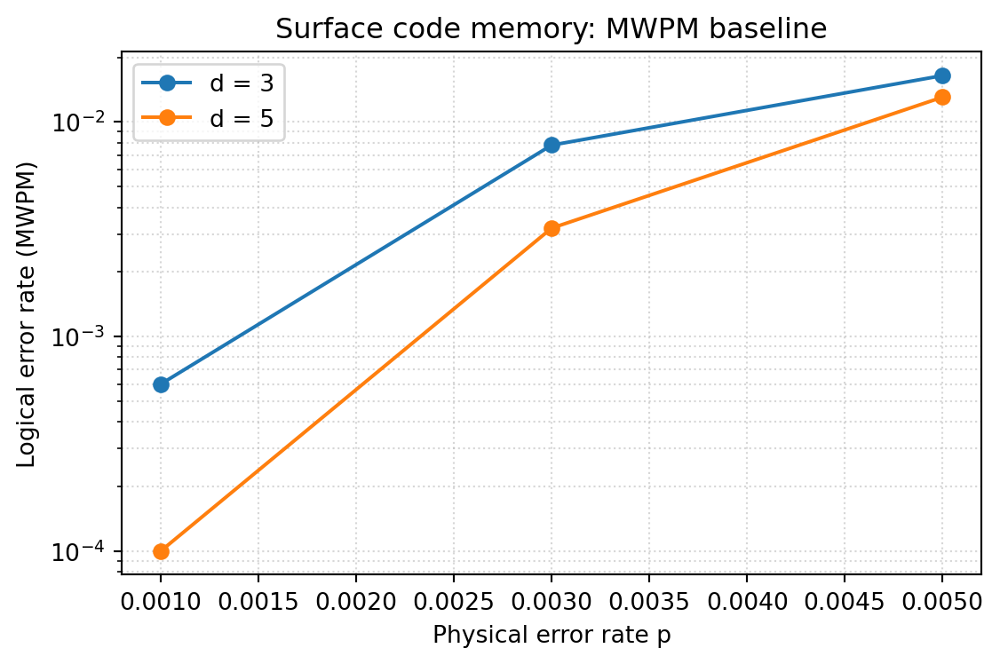

import stim
import numpy as np
print(f"Stim version: {stim.__version__}")
print(f"NumPy version: {np.__version__}")Stim version: 1.15.0
NumPy version: 1.26.4Beomdo Park
April 13, 2026
April 19, 2026
안녕하세요, ABC 프로젝트 멘토링 2기 ROQET 팀의 두 번째 기술노트입니다. 1주차에서는 GNN과 PTQ 같은 방법론을 살펴봤다면, 이번 주는 우리가 다룰 대상인 양자 오류 정정(QEC) 그 자체를 들여다봅니다.
1주차 포스트에서는 프로젝트의 핵심 AI 기법인 GNN과 PTQ의 개념을 정리했습니다. 이번 주차는 디코더가 입력으로 받게 될 신드롬 데이터가 어떻게 만들어지는지를 다룹니다.
이번 주차의 목표는 다음 세 가지입니다.
고전 컴퓨터의 오류 정정은 단순합니다. 비트를 세 번 복제(0 → 000)해두고 다수결로 오류를 정정하면 됩니다. 하지만 양자 비트(qubit)는 두 가지 제약을 갖습니다.
따라서 QEC는 데이터 큐비트를 직접 보지 않고, 주변에 배치된 보조 큐비트(ancilla)에서 오류의 흔적만 간접적으로 읽어내야 합니다. 이 흔적이 바로 신드롬(Syndrome)이며, 신드롬을 보고 어떤 오류가 발생했는지를 추론하는 작업이 디코딩(Decoding)입니다.
단일 큐비트 오류는 세 가지 Pauli 연산자로 표현됩니다.
| 연산자 | 의미 | 고전적 비유 |
|---|---|---|
| \(X\) | 비트 플립 (\(\lvert 0\rangle \leftrightarrow \lvert 1\rangle\)) | 0과 1이 뒤바뀜 |
| \(Z\) | 위상 플립 (\(\lvert +\rangle \leftrightarrow \lvert -\rangle\)) | 부호가 뒤집힘 |
| \(Y = iXZ\) | 비트 + 위상 플립 동시 발생 | 둘 다 |
임의의 단일 큐비트 오류는 이 세 가지의 선형 결합으로 분해될 수 있다는 것이 QEC의 핵심입니다. 즉, 이산적인(discrete) X와 Z 오류만 정정할 수 있으면 임의의 연속적인 오류도 정정할 수 있습니다.
안정자(Stabilizer)는 코드 공간(code space)을 정의하는 Pauli 연산자들의 집합입니다. 어떤 상태 \(\lvert\psi\rangle\)가 코드 공간에 있다는 것은, 모든 안정자 \(S_i\)에 대해
\[ S_i \lvert\psi\rangle = +1 \cdot \lvert\psi\rangle \]
을 만족한다는 뜻입니다. 즉, 모든 안정자 측정값이 \(+1\)이면 “오류 없음”입니다.
만약 어떤 오류 \(E\)가 발생해 상태가 \(E\lvert\psi\rangle\)이 되었다면, 안정자 측정값은
\[ S_i (E\lvert\psi\rangle) = (\pm 1) \cdot E\lvert\psi\rangle \]
이 되며, \(S_i\)와 \(E\)가 반교환(anti-commute)하면 측정값이 \(-1\)로 뒤집힙니다. 이 \(-1\)이 바로 detector(이전 라운드 대비 변화한 신드롬 비트)이고, 디코더가 보는 입력 신호입니다.
Surface Code는 큐비트를 2D 격자 위에 배치하고, 매 격자 면(plaquette)마다 4-체(four-body) 안정자를 정의합니다.
| 안정자 종류 | 탐지하는 오류 | 이유 |
|---|---|---|
| Z-stabilizer | X (비트 플립) 오류 | \(X\)와 \(Z\)는 반교환 |
| X-stabilizer | Z (위상 플립) 오류 | \(Z\)와 \(X\)는 반교환 |
거리(distance) \(d\)인 surface code는 \(d^2\)개의 데이터 큐비트와 \(d^2 - 1\)개의 안정자(보조 큐비트)를 사용하며, \(\lfloor (d-1)/2 \rfloor\)개까지의 오류를 정정할 수 있습니다.
Stim은 Google이 공개한 고속 안정자 회로 시뮬레이터입니다. 일반 양자 시뮬레이터와 달리 Clifford 회로에 특화되어 있어, 수천 큐비트 규모의 surface code 메모리 실험도 초당 수백만 샷을 시뮬레이션할 수 있습니다. QEC 연구에서는 사실상 표준 도구입니다.
import stim
import numpy as np
print(f"Stim version: {stim.__version__}")
print(f"NumPy version: {np.__version__}")Stim version: 1.15.0
NumPy version: 1.26.4Stim은 표준 surface code 회로를 한 줄로 만들어줍니다. 거리 \(d=3\), 라운드 \(d_t=3\), 회로 수준 잡음 \(p=0.005\)로 rotated memory Z 회로를 생성합니다.
DISTANCE = 3
ROUNDS = 3
NOISE = 0.005
circuit = stim.Circuit.generated(
"surface_code:rotated_memory_z",
distance=DISTANCE,
rounds=ROUNDS,
after_clifford_depolarization=NOISE,
after_reset_flip_probability=NOISE,
before_measure_flip_probability=NOISE,
before_round_data_depolarization=NOISE,
)
print(f"전체 큐비트 수 : {circuit.num_qubits}")
print(f"검출기(Detector) 수 : {circuit.num_detectors}")
print(f"논리 관측량 수 : {circuit.num_observables}")
print(f"회로 명령어 수 : {len(circuit)}")전체 큐비트 수 : 26
검출기(Detector) 수 : 24
논리 관측량 수 : 1
회로 명령어 수 : 56거리 \(d=3\)인 회로는 데이터 큐비트 9개 + 보조 큐비트 8개 = 17개의 물리 큐비트를 사용합니다. 검출기 수는 라운드마다 8개의 안정자가 있으므로 대략 \(8 \times 3 = 24\)개가 됩니다.
Stim 회로는 사람이 읽을 수 있는 텍스트 포맷을 가지고 있습니다. 첫 라운드 일부만 살펴보겠습니다.
text = str(circuit)
lines = text.splitlines()
print("\n".join(lines[:25]))
print(f"\n... (총 {len(lines)} 라인)")QUBIT_COORDS(1, 1) 1
QUBIT_COORDS(2, 0) 2
QUBIT_COORDS(3, 1) 3
QUBIT_COORDS(5, 1) 5
QUBIT_COORDS(1, 3) 8
QUBIT_COORDS(2, 2) 9
QUBIT_COORDS(3, 3) 10
QUBIT_COORDS(4, 2) 11
QUBIT_COORDS(5, 3) 12
QUBIT_COORDS(6, 2) 13
QUBIT_COORDS(0, 4) 14
QUBIT_COORDS(1, 5) 15
QUBIT_COORDS(2, 4) 16
QUBIT_COORDS(3, 5) 17
QUBIT_COORDS(4, 4) 18
QUBIT_COORDS(5, 5) 19
QUBIT_COORDS(4, 6) 25
R 1 3 5 8 10 12 15 17 19
X_ERROR(0.005) 1 3 5 8 10 12 15 17 19
R 2 9 11 13 14 16 18 25
X_ERROR(0.005) 2 9 11 13 14 16 18 25
TICK
DEPOLARIZE1(0.005) 1 3 5 8 10 12 15 17 19
H 2 11 16 25
DEPOLARIZE1(0.005) 2 11 16 25
... (총 89 라인)R은 reset, H는 Hadamard, CX는 controlled-NOT, M은 measurement, DETECTOR는 두 측정의 XOR로 정의되는 신드롬 비트, OBSERVABLE_INCLUDE는 우리가 보호하려는 논리 관측량 \(\langle Z_L \rangle\)입니다.
Stim은 회로로부터 안정자 배치도를 SVG로 직접 그려줍니다. 빨간 면이 X-stabilizer, 파란 면이 Z-stabilizer이며, 점은 데이터 큐비트 위치입니다. 1-4절에서 설명한 체커보드 구조를 우리 회로에서 그대로 확인할 수 있습니다.

compile_detector_sampler()는 회로를 컴파일해 매우 빠른 detector/observable 샘플러를 만들어 줍니다. 이걸로 한 번에 수만~수십만 샷을 뽑아낼 수 있습니다.
sampler = circuit.compile_detector_sampler()
N_SHOTS = 100_000
import time
t0 = time.time()
detection_events, observable_flips = sampler.sample(
shots=N_SHOTS, separate_observables=True
)
elapsed = time.time() - t0
print(f"샘플링 {N_SHOTS:,}샷 소요 시간: {elapsed*1000:.1f} ms")
print(f"detection_events.shape : {detection_events.shape} (shots, num_detectors)")
print(f"observable_flips.shape : {observable_flips.shape} (shots, num_observables)")샘플링 100,000샷 소요 시간: 4.7 ms
detection_events.shape : (100000, 24) (shots, num_detectors)
observable_flips.shape : (100000, 1) (shots, num_observables)검출기 행렬의 각 행이 하나의 학습 데이터 포인트, 즉 1주차에 봤던 \(D = (\{V_Z\}, \{V_X\}, \lambda_Z)\) 한 개에 해당합니다.
def show_sample(idx: int):
det = detection_events[idx].astype(int)
obs = observable_flips[idx].astype(int)
fired = np.where(det == 1)[0]
print(f"[shot {idx}]")
print(f" trigger 된 detector index : {fired.tolist()}")
print(f" trigger 개수 : {len(fired)}")
print(f" 논리 오류(λ_Z) : {obs[0]}")
print()
for i in range(3):
show_sample(i)[shot 0]
trigger 된 detector index : [12]
trigger 개수 : 1
논리 오류(λ_Z) : 0
[shot 1]
trigger 된 detector index : []
trigger 개수 : 0
논리 오류(λ_Z) : 0
[shot 2]
trigger 된 detector index : [0, 8]
trigger 개수 : 2
논리 오류(λ_Z) : 0
대부분의 샷에서는 detector가 거의 발화하지 않거나 짝수 개로 짝지어 발화하며, 디코더의 역할은 이 패턴을 보고 논리 오류 발생 여부를 맞히는 것입니다.
det_per_shot = detection_events.sum(axis=1)
logical_error_rate = observable_flips.mean()
print(f"논리 오류율 (raw, 디코더 없음): {logical_error_rate:.4%}")
print(f"평균 detector 발화 수 / 샷 : {det_per_shot.mean():.3f}")
print(f"detector 발화 수 분포 (0~10):")
for k in range(11):
cnt = (det_per_shot == k).sum()
bar = "█" * int(60 * cnt / N_SHOTS)
print(f" {k:2d} | {cnt:6d} {bar}")논리 오류율 (raw, 디코더 없음): 10.3710%
평균 detector 발화 수 / 샷 : 1.413
detector 발화 수 분포 (0~10):
0 | 42246 █████████████████████████
1 | 15701 █████████
2 | 20277 ████████████
3 | 10153 ██████
4 | 6643 ███
5 | 2932 █
6 | 1309
7 | 490
8 | 185
9 | 41
10 | 19 “raw 논리 오류율”은 디코더 없이 단순히 마지막 데이터 측정이 초기 라벨과 다른 비율입니다. 디코더가 신드롬을 잘 활용하면 이 값을 한 자릿수 이상 낮출 수 있어야 합니다.
거리 \(d=3\)인 회로는 라운드당 8개의 안정자를 측정하므로, 24개의 detector를 (라운드 × 안정자) 평면으로 reshape 해서 발화 빈도를 그려볼 수 있습니다.
import matplotlib.pyplot as plt
NUM_STAB_PER_ROUND = circuit.num_detectors // ROUNDS
fire_rate = detection_events.mean(axis=0)
heat = fire_rate[: NUM_STAB_PER_ROUND * ROUNDS].reshape(ROUNDS, NUM_STAB_PER_ROUND)
fig, ax = plt.subplots(figsize=(7, 3))
im = ax.imshow(heat, aspect="auto", cmap="viridis")
ax.set_xlabel("Stabilizer index")
ax.set_ylabel("Round")
ax.set_title(f"Detector fire rate (d={DISTANCE}, rounds={ROUNDS}, p={NOISE})")
ax.set_yticks(range(ROUNDS))
fig.colorbar(im, ax=ax, label="fire rate")
plt.tight_layout()
plt.show()
발화 빈도가 라운드와 안정자 위치에 따라 크게 다르지 않다면, 잡음 모델이 공간적으로 균일하다는 신호입니다. 디코더는 이런 통계적 평형을 가정하고 학습합니다.
GNN 디코더의 성능을 평가하려면 비교 대상이 필요합니다. 사실상의 표준 baseline은 MWPM(Minimum Weight Perfect Matching)이며, 빠른 구현체가 PyMatching입니다.
Stim은 회로로부터 Detector Error Model(DEM)을 자동으로 추출해줍니다. DEM은 “어떤 물리적 오류가 어떤 detector를 동시에 발화시키는지”를 확률과 함께 기술하는 그래프이며, MWPM의 입력으로 그대로 쓰입니다.
dem = circuit.detector_error_model(decompose_errors=True)
print(f"DEM 오류 메커니즘 수: {dem.num_errors}")
print(f"DEM detector 수 : {dem.num_detectors}")
print(f"DEM 첫 5개 메커니즘:")
for instr in list(dem)[:5]:
print(f" {instr}")DEM 오류 메커니즘 수: 286
DEM detector 수 : 24
DEM 첫 5개 메커니즘:
error(0.00961295) D0
error(0.00961295) D0 D1
error(0.0112585) D0 D8
error(0.00961295) D1 D2
error(0.0119115) D1 D5import pymatching
matcher = pymatching.Matching.from_detector_error_model(dem)
predicted = matcher.decode_batch(detection_events)
num_mistakes = np.sum(np.any(predicted != observable_flips, axis=1))
logical_error_rate_mwpm = num_mistakes / N_SHOTS
print(f"PyMatching(MWPM) 논리 오류율: {logical_error_rate_mwpm:.4%}")
print(f"디코더 없음(raw) 논리 오류율 : {logical_error_rate:.4%}")
print(f"개선 비율 : {logical_error_rate / max(logical_error_rate_mwpm, 1e-12):.1f}x")PyMatching(MWPM) 논리 오류율: 1.6880%
디코더 없음(raw) 논리 오류율 : 10.3710%
개선 비율 : 6.1x이 숫자가 우리 GNN 디코더가 따라잡거나 능가해야 할 baseline입니다. 1주차에 본 Lange et al. (2025) 논문에서는 동일한 셋업에서 GNN이 MWPM을 의미 있게 능가했죠.
MWPM이 실제로 보고 있는 그래프가 어떻게 생겼는지도 Stim이 직접 그려줍니다. 각 노드는 detector이고, 엣지는 “이 두 detector를 동시에 발화시키는 물리적 오류 메커니즘이 존재한다”는 의미입니다. MWPM은 발화한 detector들을 가장 짧은(=가장 그럴듯한) 엣지들로 짝지어 매칭합니다.

GNN 디코더는 본질적으로 이 그래프 위에서 메시지 패싱을 돌리는 것이므로, 시각적으로도 MWPM과 GNN이 같은 입력을 다른 방식으로 해석한다는 점이 드러납니다.
마지막으로, 거리 \(d \in \{3, 5\}\)와 물리 오류율 \(p \in \{0.001, 0.003, 0.005\}\)를 바꿔가며 MWPM baseline이 어떻게 변하는지 빠르게 스캔해 봅니다. 이 표가 다음 주에 만들 GNN 모델 평가의 기준점이 됩니다.
def mwpm_logical_error_rate(distance, rounds, noise, shots=20_000):
circ = stim.Circuit.generated(
"surface_code:rotated_memory_z",
distance=distance,
rounds=rounds,
after_clifford_depolarization=noise,
after_reset_flip_probability=noise,
before_measure_flip_probability=noise,
before_round_data_depolarization=noise,
)
sampler_local = circ.compile_detector_sampler()
dets, obs = sampler_local.sample(shots=shots, separate_observables=True)
matcher_local = pymatching.Matching.from_detector_error_model(
circ.detector_error_model(decompose_errors=True)
)
pred = matcher_local.decode_batch(dets)
return np.mean(np.any(pred != obs, axis=1))
results = []
for d in [3, 5]:
for p in [0.001, 0.003, 0.005]:
ler = mwpm_logical_error_rate(distance=d, rounds=d, noise=p)
results.append((d, p, ler))
print(f"d={d}, p={p:.3f} → MWPM logical error = {ler:.4%}")d=3, p=0.001 → MWPM logical error = 0.0600%
d=3, p=0.003 → MWPM logical error = 0.7800%
d=3, p=0.005 → MWPM logical error = 1.6450%
d=5, p=0.001 → MWPM logical error = 0.0100%
d=5, p=0.003 → MWPM logical error = 0.3200%
d=5, p=0.005 → MWPM logical error = 1.3050%import matplotlib.pyplot as plt
fig, ax = plt.subplots(figsize=(6, 4))
for d in [3, 5]:
xs = [p for (dd, p, _) in results if dd == d]
ys = [ler for (dd, _, ler) in results if dd == d]
ax.plot(xs, ys, marker="o", label=f"d = {d}")
ax.set_xlabel("Physical error rate p")
ax.set_ylabel("Logical error rate (MWPM)")
ax.set_yscale("log")
ax.set_title("Surface code memory: MWPM baseline")
ax.grid(True, which="both", ls=":", alpha=0.5)
ax.legend()
plt.tight_layout()
plt.show()
거리 \(d\)가 커질수록 논리 오류율이 떨어지는 경향은 보이지만, \(p=0.005\)처럼 회로 수준 threshold(\(p \sim 1\%\)) 근방에서는 그 이득이 1.3배 정도로 미미합니다. Surface code의 지수적 억제(exponential suppression)는 threshold보다 충분히 낮은 잡음 영역에서만 분명하게 관찰됩니다.
이번 주차에 한 일을 정리하면 다음과 같습니다.
| 단계 | 내용 |
|---|---|
| 개념 | QEC가 직접 측정 대신 안정자 측정으로 신드롬을 얻는 이유, X/Z 오류 모델, Stabilizer 형식주의 |
| 회로 | Stim으로 거리 \(d\)인 rotated surface code memory Z 회로 생성 |
| 데이터 | compile_detector_sampler로 (detection events, observable flips) 페어 10만 샷 생성 |
| Baseline | DEM → PyMatching MWPM 디코더로 논리 오류율 측정 |
| 스캔 | 거리/잡음 조합별 baseline을 표/그래프로 정리 |
특히 마지막 단계에서 얻은 (detection_events, observable_flips) 페어가 곧 다음 주에 만들 GNN 디코더의 학습 데이터입니다. 1주차에서 본 Lange et al. 논문의 표현으로 다시 쓰면 \(D = (\{V_Z\}, \{V_X\}, \lambda_Z)\), 즉 신드롬 변화 집합 + 논리 라벨입니다.
3주차에서는 이번에 만든 신드롬 데이터를 annotated detector graph로 변환하고, PyTorch Geometric으로 GraphConv 기반 디코더의 첫 학습 파이프라인을 돌려볼 계획입니다.